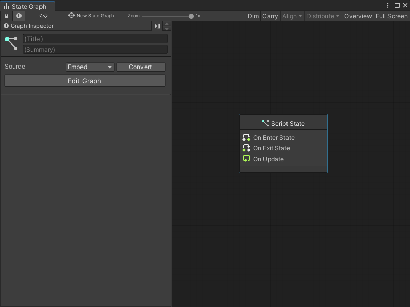
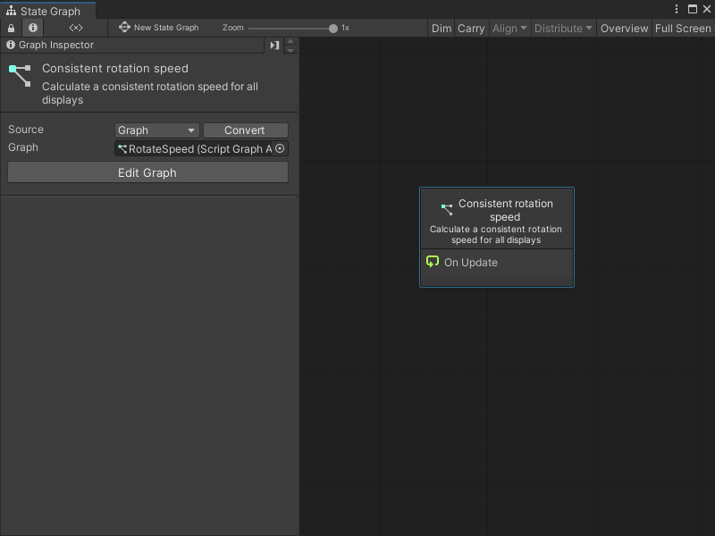
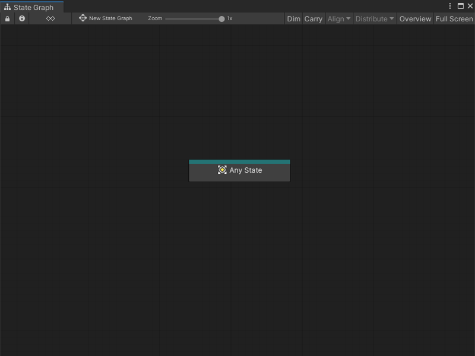
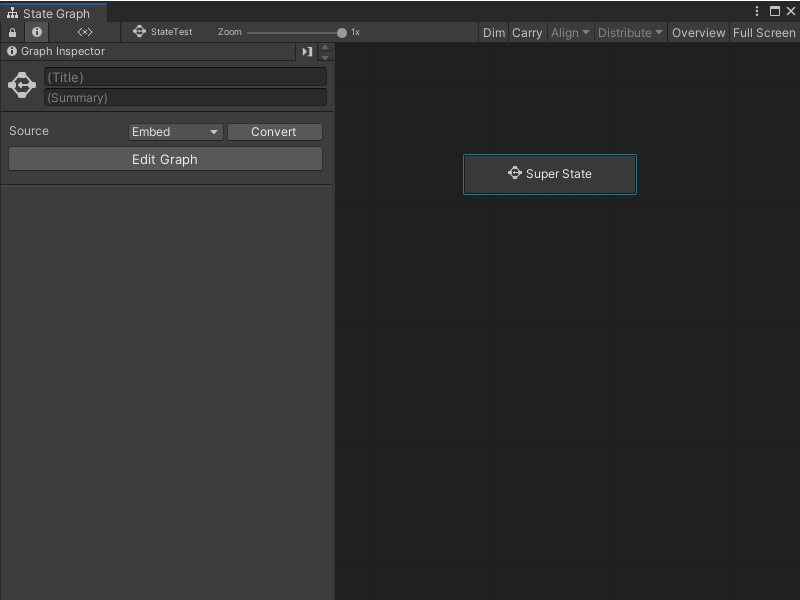
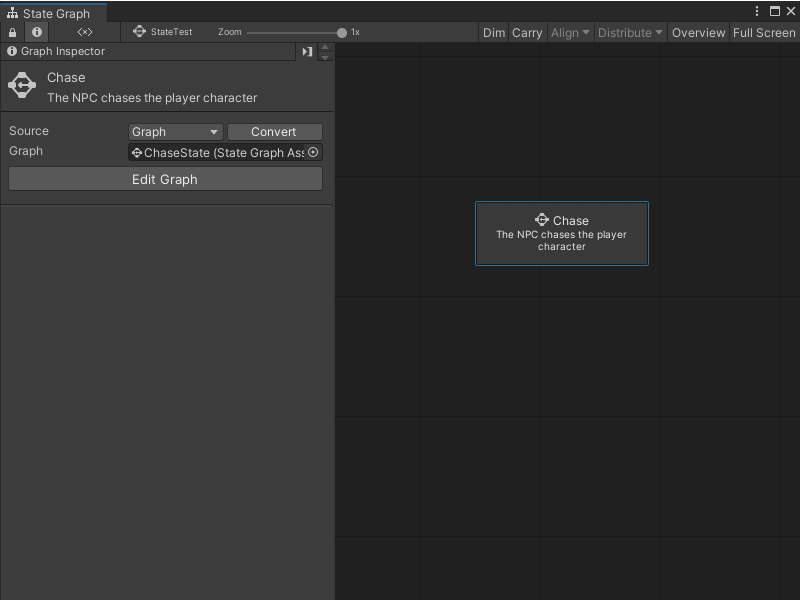

Create a new state¶
You can create three types of State nodes in a State Graph: Script States, Any States, and Super States. For more information on the types of State nodes, see State Graphs in Graphs.
Create a Script State¶
To create a new blank Script State:
[!include[open-state-menu](./snippets/vs-open-state-menu.md)]
Select Create Script State.
Visual Scripting creates a new Script State node.Open the Graph Inspector.
In the Graph Inspector, choose a source for the Script State node:
Embed: The graph only exists on the Script State node. You can only modify the graph from the node in its parent State Graph.
Graph: The graph exists in a separate file. You can modify the graph outside of its parent State Graph and reuse the graph in other areas of your application.
If you chose Graph:
Select New.
Enter a name for the graph file.
Choose where you want to save the new graph.
Select Save.

To create a Script State from an existing Script Graph:
[!include[open-state-menu](./snippets/vs-open-state-menu.md)]
Select Create Script State.
Visual Scripting creates a new Script State node.Open the Graph Inspector.
In the Graph Inspector, set the source for the Script State node to Graph.
Do one of the following:
Select the object picker (circle icon) and choose a compatible Script Graph from your project.
Click and drag a Script Graph file from your Project window and release on the Graph field.

[!TIP] Click and drag the Script Graph from your Project window into the Graph Editor to automatically create a Script State node.
Create an Any State¶
To create a new Any State node:
[!includeopen-state-menu]
Select Create Any State.

Create a Super State¶
To create a new blank Super State:
[!include[open-state-menu](./snippets/vs-open-state-menu.md)]
Select Create Super State.
Visual Scripting creates a new Super State node.Open the Graph Inspector.
In the Graph Inspector, choose a source for the Super State node:
Embed: The graph only exists on the Super State node. You can only modify the graph from the node in its parent State Graph.
Graph: The graph exists in a separate file. You can modify the graph outside of its parent State Graph and reuse the graph in other areas of your application.
If you chose Graph:
Select New.
Enter a name for the graph file.
Choose where you want to save the new graph.
Select Save.

To create a Super State from an existing State Graph:
[!include[open-state-menu](./snippets/vs-open-state-menu.md)]
Select Create Super State.
Visual Scripting creates a new Super State node.Open the Graph Inspector.
In the Graph Inspector, set the source for the Super State node to Graph.
Do one of the following:
Select the object picker (circle icon) and choose a compatible State Graph from your project.
Click and drag a State Graph file from your Project window and release on the Graph field.

[!TIP] Click and drag the State Graph from your Project window into the Graph Editor to automatically create a Super State node.